Cephalopod Hunter · visual pass 42
A clearer cuttlefish silhouette.
A continuous muscular funnel replaces the separate tube pieces. Its rolled edge, recessed opening and downward slope make the anatomy readable beneath the head. Paused dives now switch between Follow, Side and Tactical views immediately.
Continuous geometryClear outletPaused camera controls
A visible, continuous funnel
Matched camera & pose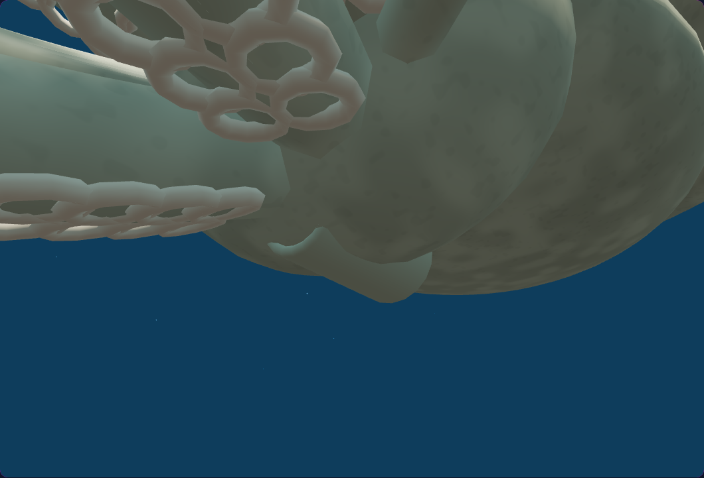
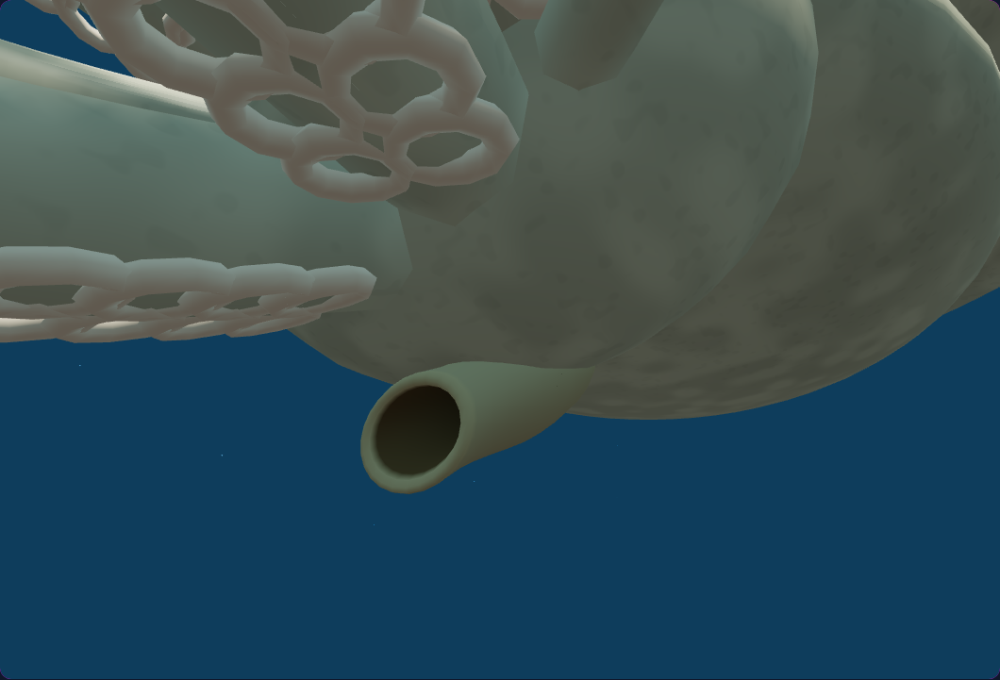
AfterBeforeThe opening in the full animal
Matched camera & pose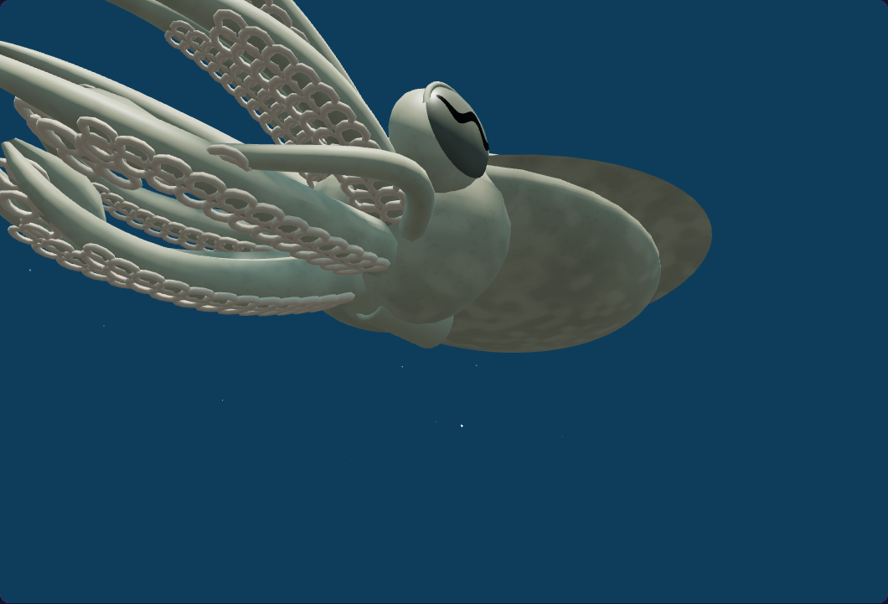
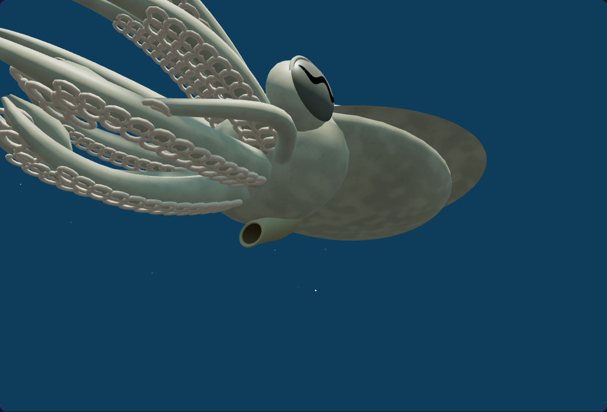
AfterBeforeThe rolled wall and recessed interior
Matched camera & pose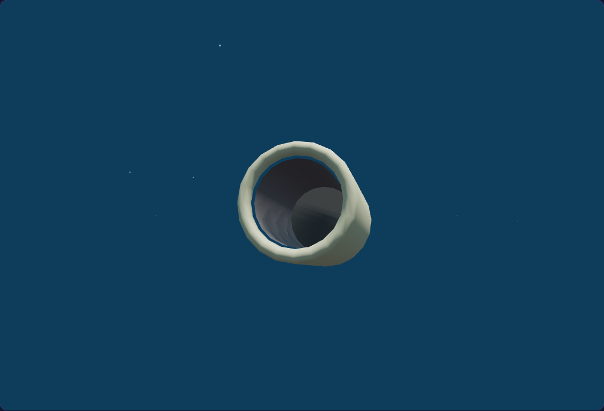
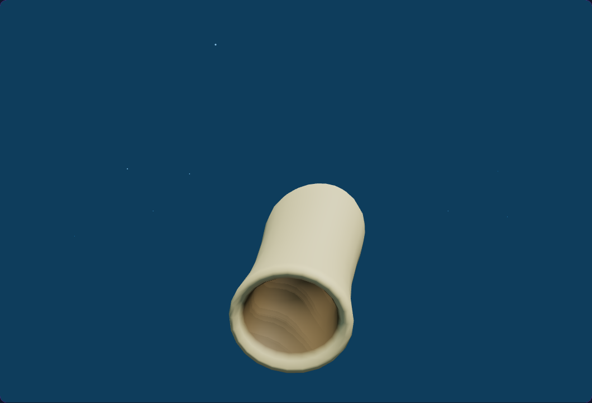
AfterBeforeIsolated geometry diagnostic: the rest of the animal is hidden. The final outlet slopes downward to clear the head.
Complete profile
Matched camera & pose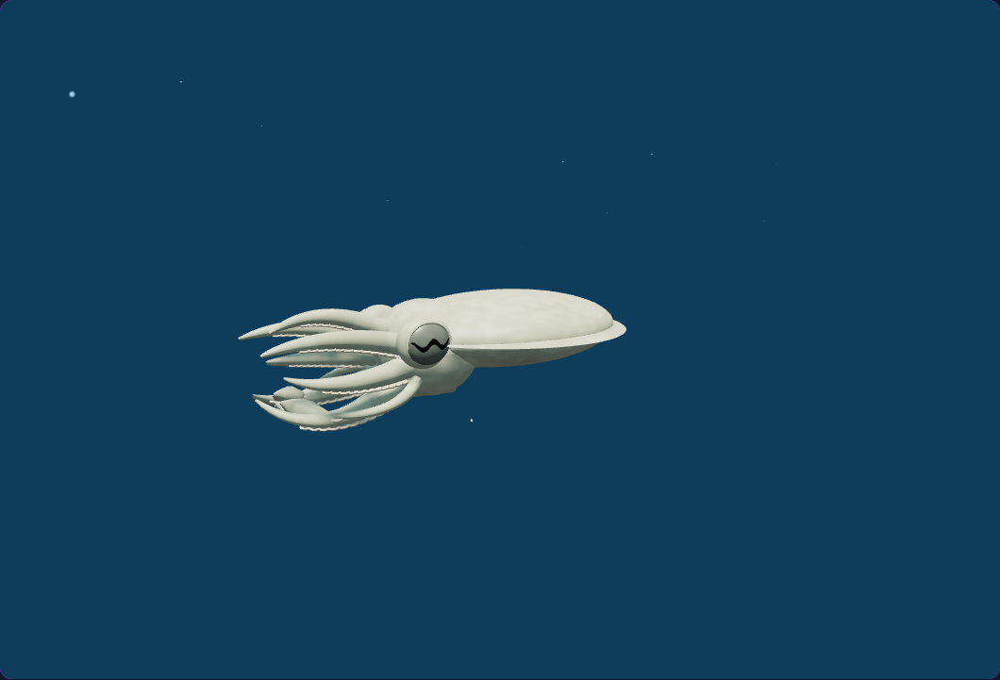
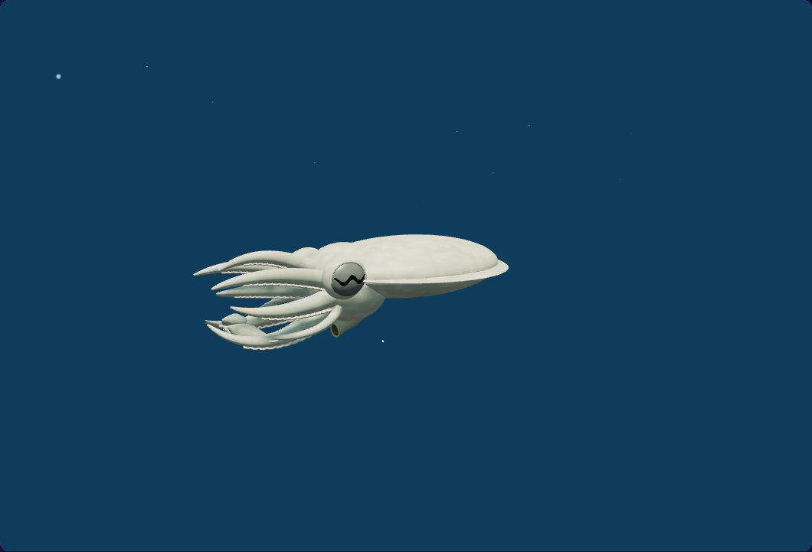
AfterBeforePhone silhouette
Matched camera & pose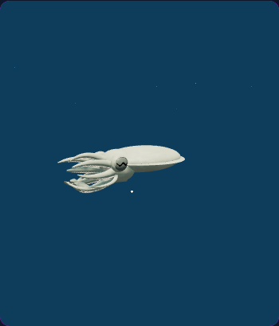
AfterBeforeFront underside
Matched camera & pose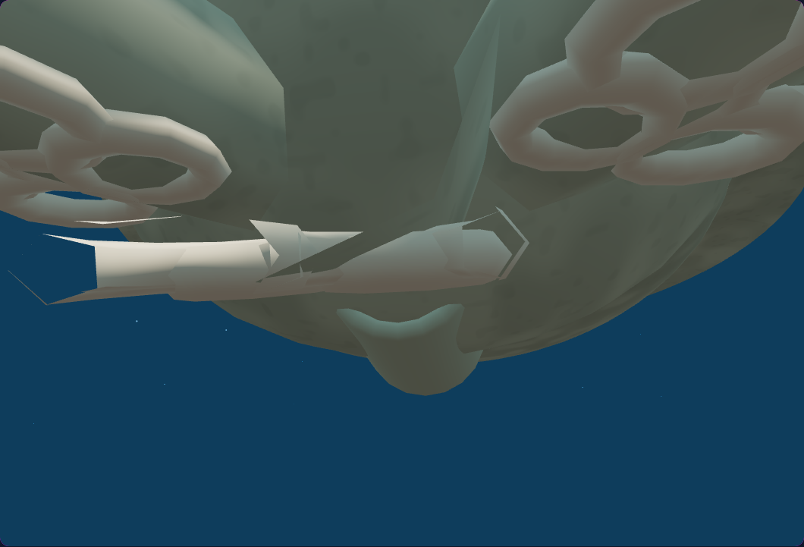
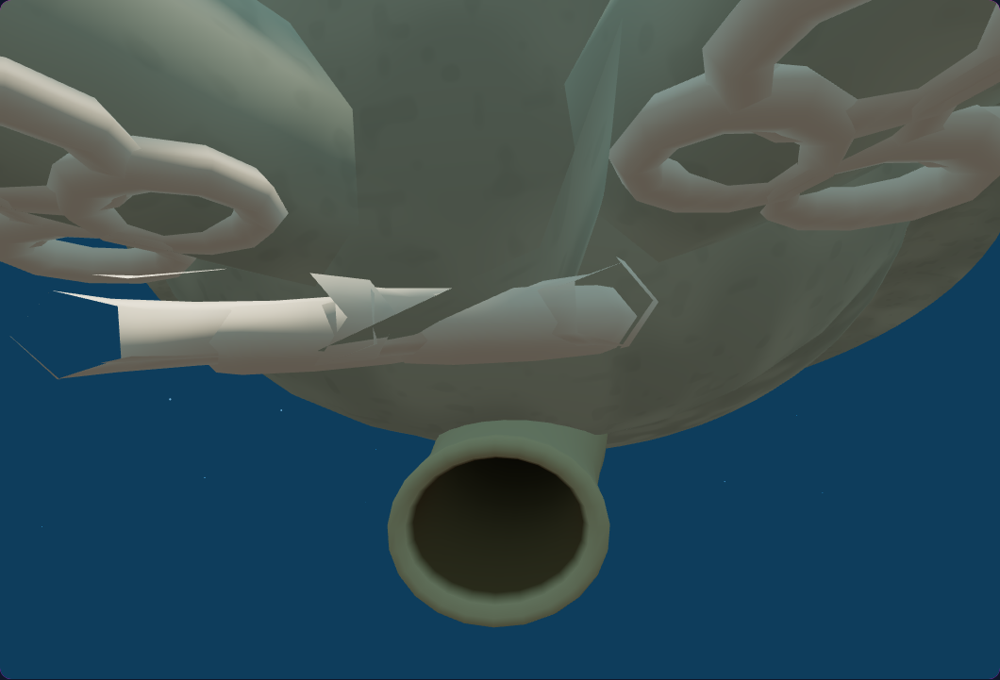
AfterBeforeInside the living environment
Fresh native cuttlefish dives using the movement and camera controls. These are current-build views, not before-and-after comparisons.
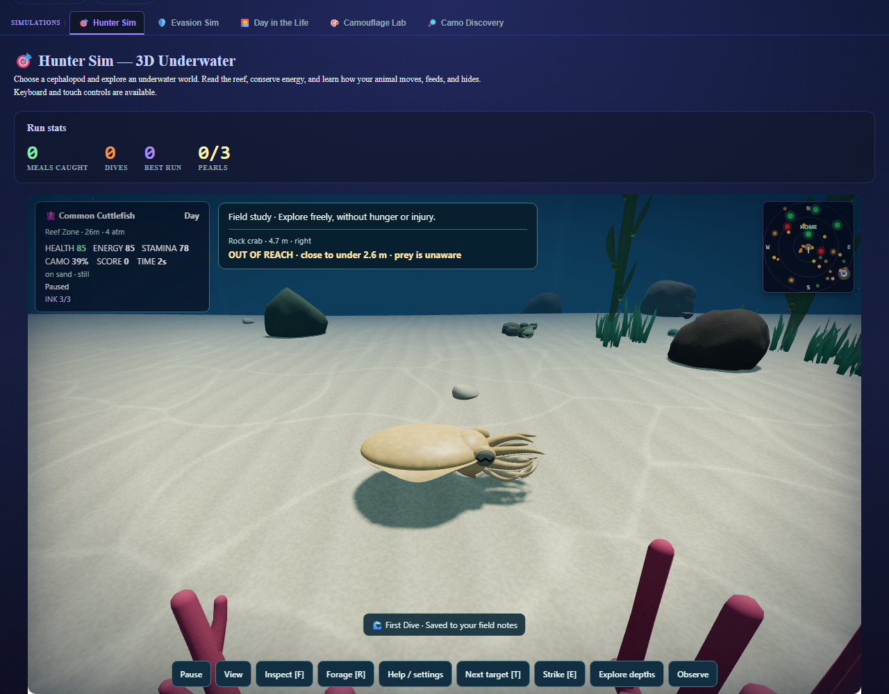
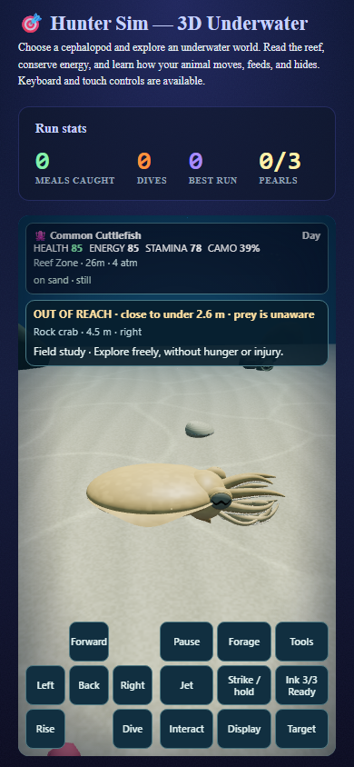
Verified: 12 new focused checks and 7 browser scenarios pass. Across 76 CPU checks, 71 pass; five historical Humboldt fingerprint failures reproduce from the untouched starting version with identical assertion messages. Four runtime copies match and pass syntax checks.